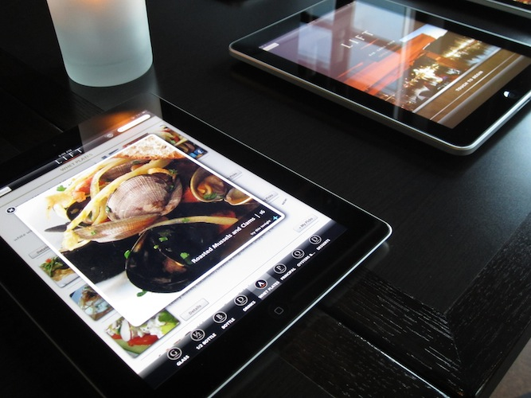
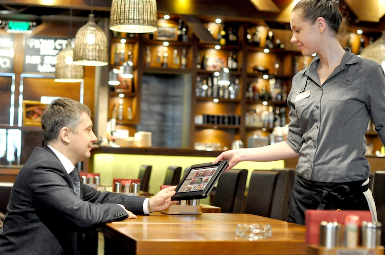

YouFood
Ceci est un burger.
YouFood
Solution applicative
Vous est présenté par :
Jonathan Tribouharet, Loic Couharde, Matthieu Novi,
Aymeric Roland, Philippe Roca et Lukasz Piliszczuk
Cahier des charges
-
Plusieurs restaurants, carte commune et mise à jour régulièrement.
-
Optimisation des délais de traitement en salle et en cuisine.
-
Modernisation des outils utilisés.
-
Paiement rapide et automatique des commandes sans appel au serveur.
-
Situation des restaurants sous contrôle et rapports statistiques.
Tablettes tactiles pour les clients

Affichage des plats, commande et paiement directement sur la tablette
Tablettes tactiles pour les serveurs

Gestion des commandes, états des plats en cuisine.
Tablettes tactiles en cuisine

Reception des commandes, notification lorsqu'elles sont prêtes.
Etape 1 - Client
-
Liste des menus.
-
Liste des plats et boissons.
-
Passage de la commande sur la tablette.
Etape 2 - Serveur
-
Visualisation des commandes effectuées par les clients.
-
Notification par la cuisine lorsque les commandes sont prêtes.
-
Suivi de l'état des commandes.
Etape 3 - Cuisine
-
Reception des commandes des clients validées au préalable par un serveur.
-
Notification du serveur lorsque la commande précédemment envoyée est prête !
Etape 4 - Paiement
-
Paiement classique avec le serveur.
-
Paiement directement sur la tablette par carte bancaire ou Paypal.
Synthèse du workflow au restaurant
-
Automatisation et optimisation des traitements.
-
Contrôle de la situation à tout instant.
- Unification et modernisation des outils utilisés par tout le personnel.
Attention portée sur le détail et la qualité du service.
-
Les clients peuvent laisser des messages lors de la commande à l'attention de la cuisine.
-
Les clients peuvent appeler à tout moment un serveur en le notifiant sur sa tablette.
Gestion de la chaine de restauration
-
Gestion de la carte et du menu pour tous les restaurants, avec mises à jour immédiates.
-
Gestion des restaurants et du personnel associé.
-
Rapports statistiques sur les commandes effectuées, par restaurants, par types de plats.
Solution en Software as a Service (SaaS)
-
Payez uniquement ce que vous consommez, ni plus, ni moins.
-
Aucun engagement de durée ni frais importants au démarrage.
-
Pas de maintenances d'application ou d'appareils, l'infrastructure est totalement externalisée.
-
Mises à jour applicatives automatiques, transparentes et gratuites.
Mise en place et démarrage simple et rapide
Grille tarifaire
|
Service
|
Prix HT en euro
|
|
Les 4 applications pour 1 restaurant
|
150 / mois (+50 par restaurant supl.)
|
|
Location tablette Samsung
|
10 / mois
|
|
Location tablette Apple
|
18 / mois
|
|
Intervention sur site 1/2 journée
|
400
|
|
Assistance téléphonique
|
0
|
|
Remplacement appareil defectueux
|
0
|
|
Remplacement appareil abimé
|
200
|
|
Remplacement appareil volé
|
400
|
L'installation de la solution prend en moyenne 1/2 journée pour un restaurant avec 30 tables, 10 serveurs et 2 tablettes en cuisine.
Optez pour une solution moderne et efficace à un prix abordable.
Des clients satisfaits utilisant notre solution.